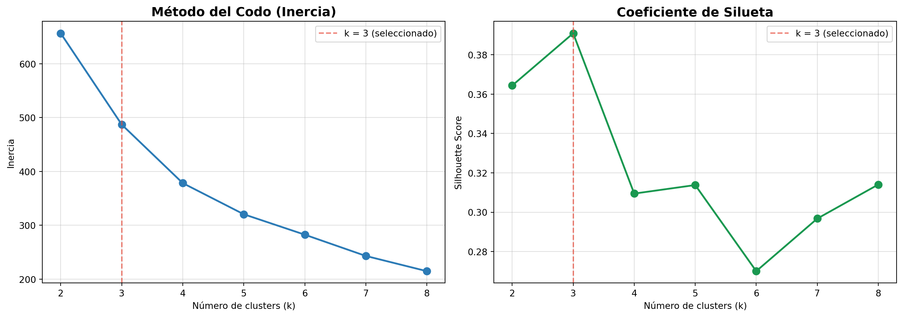
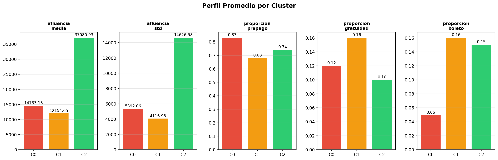
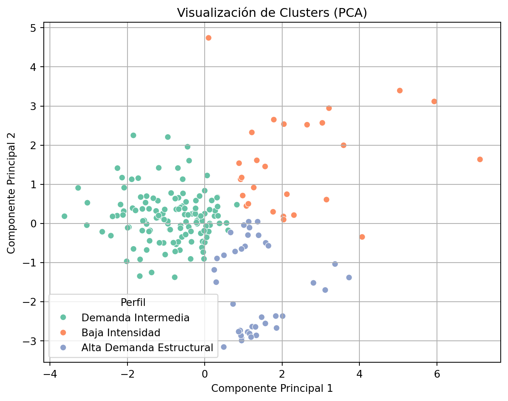

El objetivo del clustering es segmentar las estaciones del Sistema de Transporte Colectivo (STC) según su perfil estructural de demanda histórica, identificando grupos con comportamiento similar.
Trabajaremos sobre el dataset df_clustering.csv, donde cada fila representa una estación y resume su comportamiento agregado en el periodo 2021–2026.
El análisis se apoya en la clase ModeloClustering definida en src/modelo_clustering.py, que encapsula la lógica de preprocesamiento, entrenamiento y evaluación del modelo de agrupamiento con un diseño orientado a objetos.
6.1 1. Selección y Justificación de Variables
Para el proceso de agrupamiento utilizaremos las siguientes variables:
afluencia_media
afluencia_std
proporcion_prepago
proporcion_gratuidad
proporcion_boleto
6.1.1 Justificación
Estas variables capturan dimensiones complementarias del comportamiento de cada estación:
afluencia_media: mide la magnitud estructural de la demanda diaria.
afluencia_std: refleja la variabilidad o volatilidad en la afluencia.
proporcion_prepago, proporcion_gratuidad y proporcion_boleto: describen la composición del tipo de usuario y el esquema de pago predominante en cada estación.
Estas variables permiten caracterizar a cada estación tanto en términos de volumen como de estabilidad y estructura de uso.
6.2 2. Carga de Datos y configuración del Entorno
Se importan las librerías necesarias y se carga el dataset de clustering para su análisis.
Code
import sysimport os# Agregar el directorio raíz al path para importar el módulo srcsys.path.insert(0, os.path.abspath("../.."))import pandas as pdimport numpy as npimport matplotlib.pyplot as pltimport seaborn as snsfrom sklearn.decomposition import PCAfrom src import ModeloClustering# Cargar dataset de clusteringdf_cluster = pd.read_csv("../../data/processed/df_clustering.csv")print(f"Dimensiones del dataset: {df_cluster.shape}")print(f"\nColumnas disponibles:\n{df_cluster.columns.tolist()}")df_cluster.head()
Antes de aplicar K-Means es necesario normalizar las variables, ya que el algoritmo utiliza distancia euclidiana para formar los grupos.
Si no se escalan las variables, aquellas con mayor magnitud (por ejemplo afluencia_media) dominarían el cálculo de distancia, generando clusters sesgados.
Dado que nuestras variables están en distintas escalas:
afluencia_media y afluencia_std están en miles.
Las proporciones están en un rango entre 0 y 1.
Procedemos a estandarizar todas las variables utilizando la clase ModeloClustering la cual encapsula este proceso dentro de su pipeline.
Code
# Selección de variables numéricasvariables = ["afluencia_media","afluencia_std","proporcion_prepago","proporcion_gratuidad","proporcion_boleto"]X = df_cluster[variables]print("Estadísticas descriptivas de las variables:")X.describe().round(4)
Estadísticas descriptivas de las variables:
afluencia_media
afluencia_std
proporcion_prepago
proporcion_gratuidad
proporcion_boleto
count
195.0000
195.0000
195.0000
195.0000
195.0000
mean
16108.4530
5820.6317
0.7170
0.1427
0.1403
std
12219.2627
4656.6925
0.0742
0.0360
0.0626
min
1186.4373
444.2961
0.5516
0.0478
0.0000
25%
8532.6581
2845.0140
0.6715
0.1181
0.1192
50%
13118.6435
4505.4933
0.7076
0.1429
0.1496
75%
19971.8297
7428.5723
0.7541
0.1606
0.1763
max
84625.8340
28355.1759
0.9028
0.2790
0.3496
6.3.1 Justificación
La estandarización transforma cada variable para que tenga:
Media = 0
Desviación estándar = 1
Esto asegura que todas las variables contribuyan de manera equilibrada al cálculo de distancias en el algoritmo K-Means.
Dado que el número de variables es reducido (5), no es necesario aplicar reducción de dimensionalidad en esta etapa.
6.4 4. Selección del Algoritmo y Justificación
Para el proceso de agrupamiento utilizaremos el algoritmo K-Means, una técnica de clustering basada en partición que agrupa observaciones minimizando la varianza interna dentro de cada grupo.
Este algoritmo esta implementado en la clase ModeloClustering.
6.4.1 Justificación del uso de K-Means
El uso de K-Means es adecuado en este contexto por las siguientes razones:
Las variables utilizadas son numéricas y continuas.
El número de observaciones (estaciones) es moderado.
Se busca segmentar estaciones en grupos con perfiles estructurales diferenciados.
El objetivo es interpretar los perfiles promedio de cada grupo, lo cual es más sencillo con K-Means que con algoritmos basados en densidad como DBSCAN.
Dado que previamente se realizó una estandarización de las variables dentro del pipeline, el uso de distancia euclidiana (empleada por K-Means) es apropiado y no introduce sesgos por diferencias de escala.
En este contexto, K-Means permite identificar segmentos estructurales de estaciones tales como:
Estaciones de alta demanda estructural.
Estaciones con alta variabilidad.
Estaciones con predominancia de ciertos esquemas de pago.
6.5 5. Elección del Número de Grupos
El algoritmo K-Means requiere especificar previamente el número de clusters (k). Para determinar un valor adecuado utilizamos dos criterios cuantitativos:
Método del codo (inercia)
Coeficiente de silueta
Ambos permiten evaluar la calidad del agrupamiento desde distintas perspectivas: compacidad interna y separación entre grupos.
Para esto el método evaluar_k de la clase ModeloClustering construye pipelines temporales independientes para cada valor de (k), lo ajusta sobre los datos y calcula las métricas correspondientes, permitiendo que el procesamiento sea identico al entrenamiento final.
Code
# Instanciar modelo con semilla definidamodelo_eval = ModeloClustering(n_clusters=2, seed=42)# Evaluar k desde 2 hasta 8inercias, silhouettes = modelo_eval.evaluar_k(X, k_max=8)K_range_eval =range(2, 9)
6.5.1 5.1 Método del Codo (Inercia)
La inercia mide la suma de las distancias cuadradas entre cada punto y el centroide de su cluster.
A menor inercia, más compactos son los grupos.
Code
fig, axes = plt.subplots(1, 2, figsize=(14, 5))# Gráfica del codoaxes[0].plot(K_range_eval, inercias, marker="o", color="#2c7bb6", linewidth=2, markersize=8)axes[0].set_title("Método del Codo (Inercia)", fontsize=14, fontweight="bold")axes[0].set_xlabel("Número de clusters (k)")axes[0].set_ylabel("Inercia")axes[0].grid(True, alpha=0.4)axes[0].axvline(x=3, color="#e74c3c", linestyle="--", alpha=0.7, label="k = 3 (seleccionado)")axes[0].legend()# Gráfica del coeficiente de siluetaaxes[1].plot(K_range_eval, silhouettes, marker="o", color="#1a9850", linewidth=2, markersize=8)axes[1].set_title("Coeficiente de Silueta", fontsize=14, fontweight="bold")axes[1].set_xlabel("Número de clusters (k)")axes[1].set_ylabel("Silhouette Score")axes[1].grid(True, alpha=0.4)axes[1].axvline(x=3, color="#e74c3c", linestyle="--", alpha=0.7, label="k = 3 (seleccionado)")axes[1].legend()plt.tight_layout()plt.show()

6.5.1.1 Interpretación
El número óptimo de clusters suele identificarse en el punto donde la curva deja de descender de forma pronunciada y comienza a aplanarse.
El coeficiente de silueta evalúa qué tan bien asignado está cada punto a su cluster en comparación con los demás clusters.
Su valor oscila entre -1 y 1:
Cercano a 1 → grupos bien definidos y separados.
Cercano a 0 → solapamiento entre clusters.
Negativo → mala asignación.
El valor de (k) que maximiza el silhouette score indica una mejor separación entre grupos.
| k | Inercia | Silhouette Score | |—|———|—————–|
# Asignar etiquetas de cluster al dataframe originaldf_cluster["cluster"] = kmeans_final.predecir(X)df_cluster[["estacion", "linea", "cluster"] + variables].head(10)
estacion
linea
cluster
afluencia_media
afluencia_std
proporcion_prepago
proporcion_gratuidad
proporcion_boleto
0
BALBUENA
1
1
6826.178790
1972.007982
0.665244
0.160810
0.173946
1
BALDERAS
1
1
14966.389778
10277.999962
0.595050
0.238680
0.166271
2
BOULEVARD PUERTO AEREO
1
1
14628.169273
4195.615651
0.710051
0.187989
0.101960
3
CANDELARIA
1
1
16534.923182
4607.607514
0.632709
0.202387
0.164904
4
CHAPULTEPEC
1
2
22932.218379
16400.023590
0.680619
0.104059
0.215322
5
CUAUHTEMOC
1
1
8006.099122
6030.157303
0.605662
0.181558
0.212780
6
GOMEZ FARIAS
1
1
19097.244731
5262.724658
0.693111
0.158132
0.148757
7
INSURGENTES
1
2
20315.708312
16360.096648
0.722942
0.149379
0.127679
8
ISABEL LA CATOLICA
1
1
10843.662759
7030.782462
0.680808
0.151341
0.167850
9
JUANACATLAN
1
1
3543.776458
3282.701961
0.613452
0.158172
0.228377
6.7 7. Perfilado de los Clusters
Para interpretar los grupos identificados por K-Means, analizamos las estadísticas promedio de cada variable dentro de cada cluster.
6.7.1 7.1 Centroides en Escala Original
El método Obtener_centroides() de ModeloClustering aplica la transformación inversa del StandardScaler para devolver los centroides en las unidades originales, facilitando la interpretación.
Code
centroides = kmeans_final.Obtener_centroides()centroides.index.name ="Cluster"print("Centroides por cluster (escala original):\n")centroides.round(2)
Centroides por cluster (escala original):
afluencia_media
afluencia_std
proporcion_prepago
proporcion_gratuidad
proporcion_boleto
Cluster
0
14733.13
5392.06
0.83
0.12
0.05
1
12154.65
4116.98
0.68
0.16
0.16
2
37080.93
14626.58
0.74
0.10
0.15
6.7.2 7.2 Perfiles Estadísticos por Cluster
Code
perfil_clusters = df_cluster.groupby("cluster")[variables].mean().round(2)print("Perfil promedio por cluster:\n")perfil_clusters
Perfil promedio por cluster:
afluencia_media
afluencia_std
proporcion_prepago
proporcion_gratuidad
proporcion_boleto
cluster
0
14733.13
5392.06
0.83
0.12
0.05
1
12154.65
4116.98
0.68
0.16
0.16
2
37080.93
14626.58
0.74
0.10
0.15
6.7.3 7.3 Visualización de Perfiles
Code
fig, axes = plt.subplots(1, len(variables), figsize=(16, 5))colores_clusters = {0: "#e74c3c", 1: "#f39c12", 2: "#2ecc71"}for i, var inenumerate(variables): valores = [perfil_clusters.loc[c, var] for c inrange(3)] barras = axes[i].bar( [f"C{c}"for c inrange(3)], valores, color=[colores_clusters[c] for c inrange(3)], edgecolor="white", linewidth=1.5 ) axes[i].set_title(var.replace("_", "\n"), fontsize=10, fontweight="bold") axes[i].set_ylabel("") axes[i].grid(axis="y", alpha=0.3)for bar, val inzip(barras, valores): axes[i].text( bar.get_x() + bar.get_width() /2, bar.get_height() *1.01,f"{val:.2f}", ha="center", va="bottom", fontsize=9 )plt.suptitle("Perfil Promedio por Cluster", fontsize=14, fontweight="bold", y=1.02)plt.tight_layout()plt.show()

6.8 8 Interpretación de Perfiles
A partir de las medias observadas en cada grupo, se identifican tres perfiles estructurales diferenciados:
6.8.1 Cluster 0 — Alta Demanda Estructural
Mayor afluencia_media.
Elevada afluencia_std (mayor volatilidad).
Predominio del prepago.
Corresponde a estaciones troncales o nodos estratégicos del sistema con concentración estructural alta de pasajeros.
6.8.2 Cluster 1 — Demanda Intermedia
Afluencia_media moderada.
Variabilidad media.
Composición de pago relativamente equilibrada.
Representa estaciones con flujo constante pero sin saturación estructural extrema.
6.8.3 Cluster 2 — Baja Intensidad Estructural
Menor afluencia_media.
Variabilidad relativamente baja.
En algunos casos mayor proporción relativa de gratuidad o boleto.
Corresponde a estaciones periféricas o con menor flujo estructural.
6.9 9. Asignación de Etiquetas Interpretativas
Para facilitar la comprensión del modelo, asignamos etiquetas descriptivas a los clusters:
Code
# Usar el diccionario de nombres definido en la clase ModeloClusteringdf_cluster["perfil_cluster"] = df_cluster["cluster"].map(ModeloClustering.NOMBRES_CLUSTERS)print("Distribución de estaciones por perfil:")print(df_cluster["perfil_cluster"].value_counts())
Distribución de estaciones por perfil:
perfil_cluster
Demanda Intermedia 130
Alta Demanda Estructural 38
Baja Intensidad 27
Name: count, dtype: int64
De esta manera, el clustering no solo segmenta numéricamente las estaciones, sino que proporciona una interpretación estructural clara y coherente con la dinámica observada en el sistema.
6.10 10. Visualización de Clusters
6.10.1 10.1 Visualización de Clusters con PCA
Para visualizar los grupos en un espacio bidimensional, aplicamos reducción de dimensionalidad mediante PCA.
Code
# Obtener datos en escala estandarizada desde el pipeline internoscaler_interno = kmeans_final.pipeline_.named_steps["scaler"]X_scaled_final = scaler_interno.transform(X)# Aplicar PCA sobre los datos normalizadospca = PCA(n_components=2, random_state=42)X_pca = pca.fit_transform(X_scaled_final)df_cluster["pca1"] = X_pca[:, 0]df_cluster["pca2"] = X_pca[:, 1]varianza_explicada = pca.explained_variance_ratio_print(f"Varianza explicada — PC1: {varianza_explicada[0]:.1%} | PC2: {varianza_explicada[1]:.1%}")print(f"Varianza total explicada: {sum(varianza_explicada):.1%}")
plt.figure(figsize=(8,6))sns.scatterplot( data=df_cluster, x="pca1", y="pca2", hue="perfil_cluster", palette="Set2")plt.title("Visualización de Clusters (PCA)")plt.xlabel("Componente Principal 1")plt.ylabel("Componente Principal 2")plt.legend(title="Perfil")plt.grid(True)plt.show()

La separación observada confirma que los grupos identificados presentan diferencias estructurales en el espacio de características.
6.10.2 10.2 Distribución de Estaciones por Cluster
Esto permite identificar si determinadas líneas concentran mayor proporción de estaciones de alta demanda estructural o si presentan un comportamiento más heterogéneo.
6.11 11. Persistencia del Modelo
El modelo entrenado se guarda en disco usando el método guardar_modelo() heredado de ModeloBase. Esto permite reutilizar los centroides y el scaler sin necesidad de re-entrenar.
El análisis de agrupamiento confirma que la red del Metro no es homogénea, sino que presenta perfiles estructurales claramente diferenciados:
Un grupo de estaciones troncales con alta concentración de pasajeros.
Un grupo intermedio con demanda estable.
Un grupo periférico de baja intensidad estructural.
Esta segmentación complementa el modelo supervisado al proporcionar una visión estructural del sistema, permitiendo identificar patrones ocultos que no se observan únicamente a partir de análisis descriptivos o clasificación diaria.
El clustering aporta una dimensión estratégica al análisis, al segmentar la red en perfiles operativos diferenciados que pueden ser utilizados para planificación, mantenimiento y gestión de saturación.